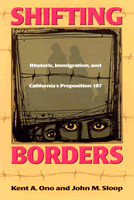

Learning the lessons of California's Proposition 187
Learning the lessons of California's Proposition 187


 Learning the lessons of California's Proposition 187
Learning the lessons of California's Proposition 187

|  |
Shifting BordersRhetoric, Immigration, and California's Proposition 187Kent A. Ono and John M. Slooppaper EAN: 978-1-56639-917-3 (ISBN: 1-56639-917-3) |
Critical and Cultural Studies Division of the National Communication Association's Book of the Year Award, 2004
"Like articles representing the positions of proponents of the measure, those representing opponents constructing the nation as potentially in danger as a result of undocumented immigration."
How do we learn to recognize the damning effects of good rhetorical intentions? And where will we find arguments which escape this trap that permeates the liberal social policy world? Shifting Borders uses an evaluation of the debate over California Proposition 187 to demonstrate how this quandary is best understood by close interrogation of mainstream reports and debates and by bringing to the fore voices that are often left out of mediated discussions.
It is these voices outside the mainstream, so-called "outlaw" discourses, that hold the best possibilities for real social change. To illustrate their claim, the authors present dominant and outlaw discourses around Proposition 187, from television reports, internet chat sites, and religious discourse to coverage of the Los Angeles Times. Their critique ably demonstrates how difficult it is to maintain a position outside the mainstream, but also how important it is for the press, citizens and scholars to actively search out such voices. The findings are organized through a model that provides an innovative method for understanding events and arguments through their rhetorical and communicative construction. In a world where the mediated word defines so much of what we know, Shifting Borders provides a lucid introduction to analyzing the spoken and written word that constitutes political debate in contemporary U.S. culture. In doing so, it makes an important contribution to any future development of progressive political strategy.
Excerpt available at www.temple.edu/tempress
"This is a subtle, incisive, and provocative analysis of the complex political rhetoric undergirding the debate over immigration and citizenship in contemporary American society. The book's strength lies in its sharp analysis of the constant tension and struggle between those intent on perpetuating social hierarchies based on narrow conceptions of American citizenship and those struggling to dismantle such systems of categorization in their quest to create a more democratic society. In the aftermath of September 11, Ono and Sloop's thoughtful treatment should provoke sober reconsideration of some of the most pressing social and political issues of our time."
—David G. Gutiérrez, University of California, San Diego
"Shifting Borders offers a comprehensive reading of the Proposition 187 controversy. It employs an alternative way of thinking about this [issue], and reminds us to think about race relations in the new century. The contextualizing is particularly well done. It is as if Ono and Sloop stand on a firetower and see the fire in the distance that is coming our way."
—Thomas Nakayama, Hugh Downs School of Human Communication, Arizona State University
"The authors contend that studying Proposition 187 allows them to look for connections between and explanations about migration, xenophobia, citizenship, nativism, social borders, and even international relationships. It is their opinion that Proposition 187 'shatters the cultural assumption that the United States is a 'post-racist' society.' Ono and Sloop have produced a well-written and scholarly work that is thoroughly documented with extensive notes and references."
—Choice
"Shifting Borders provides readers with both a comprehensive reading of the complex logics shaping the Proposition 187 controversy and a useful framework for deconstructing the spectrum of logics at work throughout public life."
—Rhetoric and Public Affairs, Review Essay, Summer 2004
"This is a very useful and important book.... clearly written, often perceptive, and a pleasure to read. It is well-positioned in the very interesting field of rhetorical analysis and will be of much interest for people working on immigration, border studies, race and ethnicity, discourse analysis, critical theory, governmentality, and the like."
—American Journal of Sociology
Read a review, from Hispanic Outlook (20 October 2003), written by Francisco Vázquez (pdf).
"In essence, [Sloop and Ono] are helping develop political strategy. Such a proactive posture may not appeal to historians; however, scholars of critical rhetoric, political science, and ethnic studies will likely find the book provocative and useful."
—The Western Historical Quarterly
Acknowledgments
1. Introduction
2. The Proliferation of Enemies to the National Body
3. Pro-187 California Nativism in the Los Angeles Times
4. Opposition and Complicity in the Los Angeles Times
5. Complicity and Resistance in Vernacular Discourse
6. Outlaw Vernacular Discourse: Thinking Otherwise
7. Conclusion
Appendix: Excerpts from the Proposition 187 Ballot
Notes
References
Index
 | Kent A. Ono is an Associate Professor in the American Studies and Asian American Studies programs at the University of California, Davis. He is the co-editor of Enterprise Zones: Critical Positions on Star Trek. |
 | John M. Sloop is an Associate Professor of Communication Studies at Vanderbilt University. He is the author of The Cultural Prison, co-editor of Judgment Calls and Mapping the Beat. |
Sociology
Race and Ethnicity
Immigration Studies
Mapping Racisms, edited by Jo Carrillo, Darrell Y. Hamamoto, Rodolfo D. Torres, and E. Frances White.
The books in Mapping Racisms, edited by Jo Carrillo, Darrell Y. Hamamoto, Rodolfo D. Torres, and E. Frances White, assess the changing nature and meaning of racialized social relations in the United States. Although many of the works in the series are expected to be cultural, socio-economic, and historical studies devoted to a single ethnic group, the editors are especially interested in manuscripts that explore comparisons among these groups and analyze contemporary expressions of racialized relations and identities in the context of demographic shifts, changing class formations, and new forms of global dislocation. The aim of the series is to publish books that are analytical and rigorous, but at the same time appealing to a general audience.
© 2015 Temple University. All Rights Reserved. This page: http://www.temple.edu/tempress/titles/1588_reg.html.